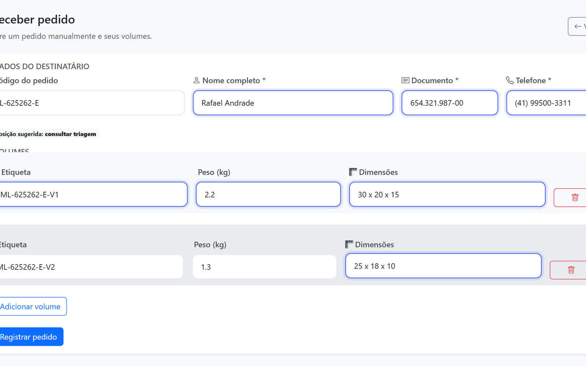
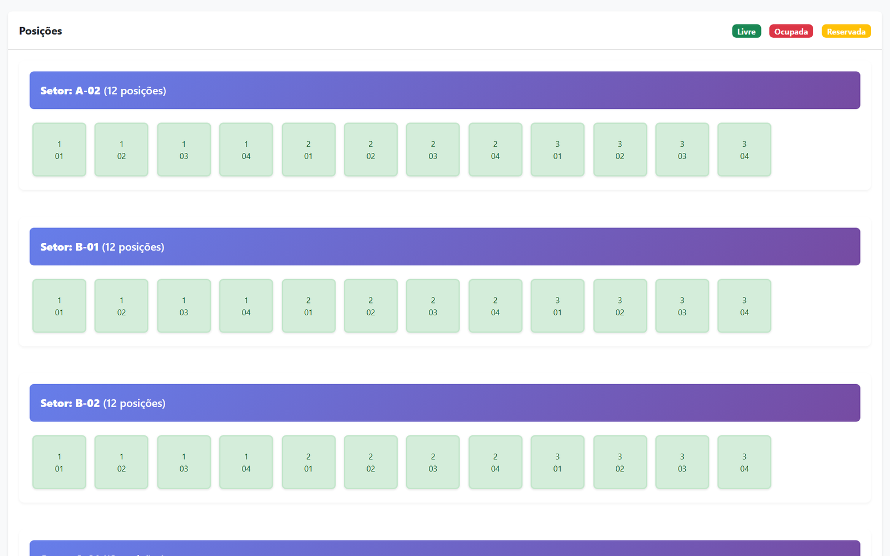
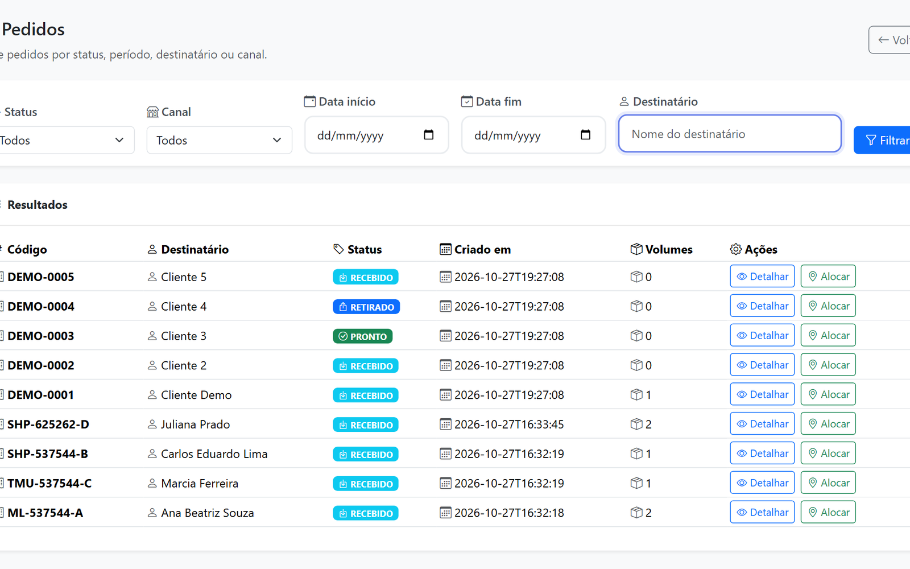

Três canais, uma fila
Mercado Livre, Shopee e Temu entram no mesmo recebimento e no mesmo mapa de posições.
Ver os canaisPonto de retirada (PUDO) · Windows x64 · pré-release
O CaraCore Hub reúne o dia de um PUDO: cadastro do pedido e dos volumes, mapa de posições por rua e módulo, e a lista de pedidos filtrada por status, canal e destinatário. As encomendas chegam do Mercado Livre, da Shopee e da Temu. Os dados ficam no computador do ponto. O produto é Free: R$ 0.
Baixar a pré-release v2.1.0-rc1.7Versão Windows para avaliação, sem assinatura digital e ainda não homologada. O GA do instalador está planejado para 06/04/2027. Mac e Linux ficam fora desta versão.
Três telas do dia a dia. As capturas abaixo são da pré-release v2.1.0-rc1.7.

Pedido, destinatário e volumes com etiqueta, peso e dimensões — no balcão ou pelos conectores dos três canais.

Mapa por rua, módulo e setor, com posição livre, ocupada ou reservada. A posição fica registrada no volume.

Filtro por status, canal, data e destinatário. Cada pedido aparece como recebido, pronto ou retirado.
Quatro dores do ponto de retirada. Uma frase cada.
Mercado Livre, Shopee e Temu entram no mesmo recebimento e no mesmo mapa de posições.
Ver os canaisSetor, rua e módulo no mapa de estoque. A posição fica ligada ao volume, não na memória de quem atendeu.
Ver o mapaBusca por destinatário e filtro por status, canal e data. O status do pedido aparece na própria lista.
Ver a listaO banco do Hub roda no computador do ponto. A operação não fica pendurada na nuvem de terceiros.
TecnologiaAs encomendas dos três canais chegam na lista do ponto, e o balcão também cadastra volume à mão.
Pedidos e volumes entram pelo conector do canal.
Pedidos e volumes entram pelo conector do canal.
Pedidos e volumes entram pelo conector do canal.
Amazon e B2W não têm conector nesta edição: existem apenas no modelo de dados e não aparecem no filtro de canais. A entrada manual no balcão vale para qualquer encomenda. As notificações por WhatsApp dependem de configuração.
O produto é Free. O suporte é opcional e pago à parte.
O CaraCore Hub é Free: não há mensalidade pelo uso do produto. A pré-release Windows v2.1.0-rc1.7 está liberada para avaliação até o GA de 06/04/2027.
Versão de avaliação, sem assinatura digital e ainda não homologada. Mac e Linux ficam fora desta versão.
Baixar a pré-release v2.1.0-rc1.7R$ 79,90/mês, a partir do GA do instalador Windows (06/04/2027). É pagamento recorrente do suporte, não do produto.
A contratação começa no GA. A pré-release em avaliação não é cobrada.
Falar sobre o suporteInstale em um computador Windows, cadastre os seus pedidos e veja se o fluxo cabe na rotina do balcão. Se algo não fechar, escreva para o canal da loja.
Falar com a Cara Core